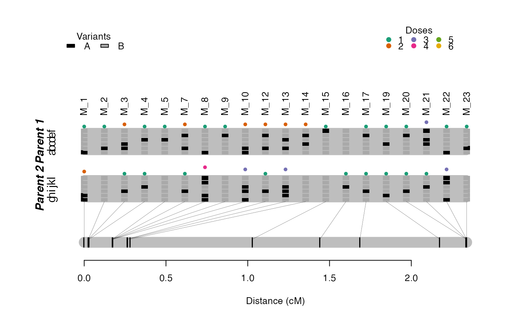
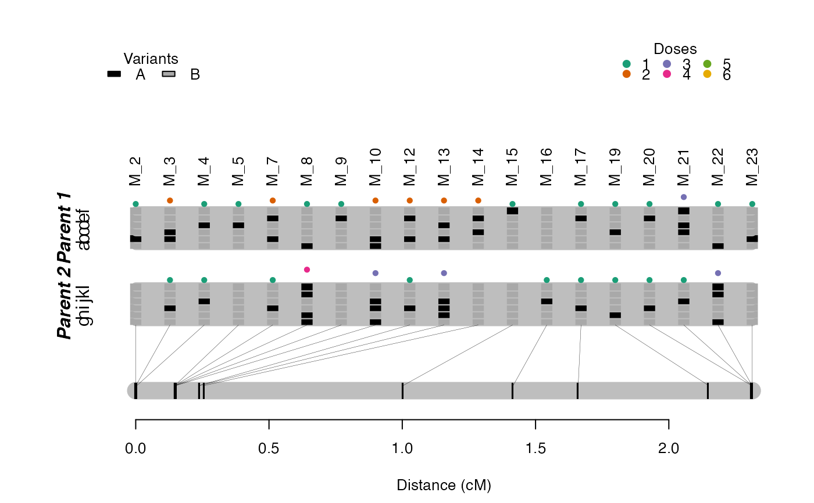
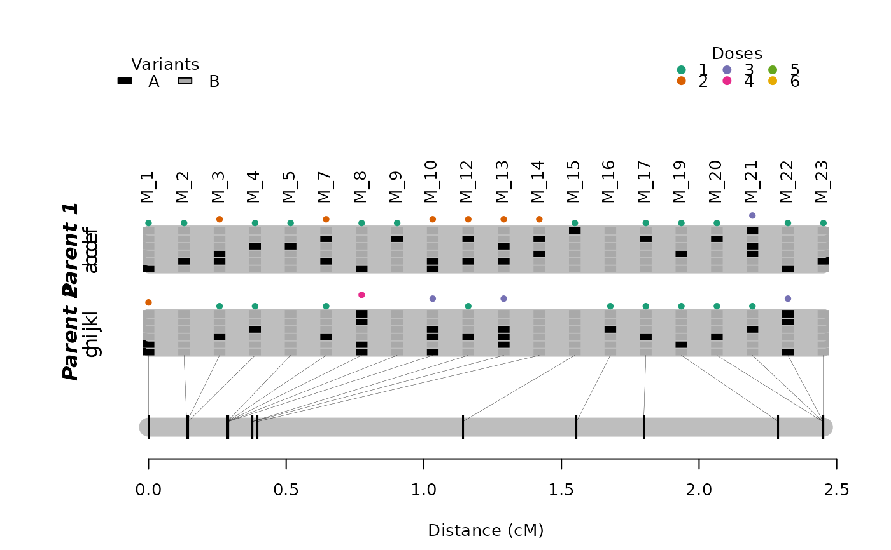
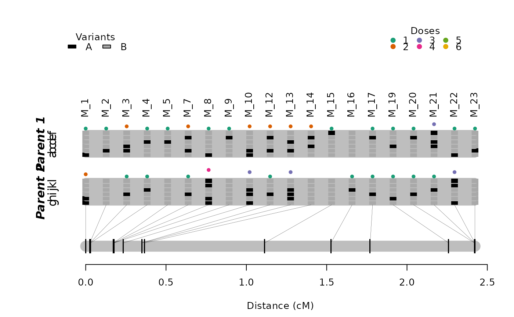
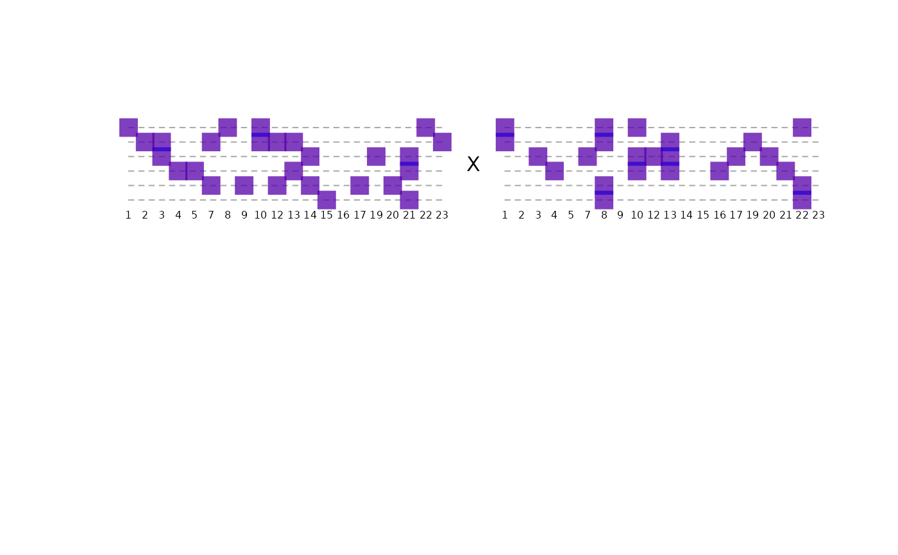
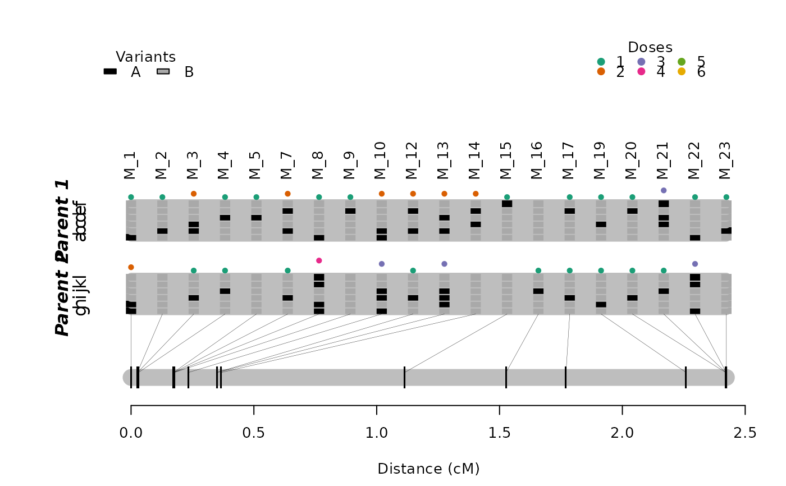
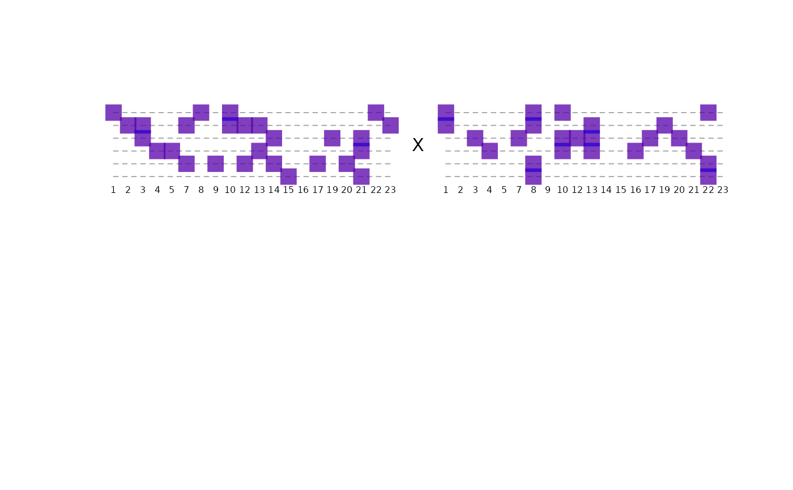

Creates a new map by adding a marker in a given position in a pre-built map.
add_marker(
input.map,
mrk,
pos,
rf.matrix,
genoprob = NULL,
phase.config = "best",
tol = 0.001,
extend.tail = NULL,
r.test = NULL,
verbose = TRUE
)Arguments
- input.map
an object of class
mappoly.map- mrk
the name of the marker to be inserted
- pos
the name of the marker after which the new marker should be added. One also can inform the numeric position (between markers) were the new marker should be added. To insert a marker at the beginning of a map, use
pos = 0- rf.matrix
an object of class
mappoly.rf.matrixcontaining the recombination fractions and the number of homologues sharing alleles between pairwise markers oninput.map. It is important thatshared.alleles = TRUEin functionrf_list_to_matrixwhen computingrf.matrix.- genoprob
an object of class
mappoly.genoprobcontaining the genotype probabilities for all marker positions oninput.map- phase.config
which phase configuration should be used. "best" (default) will choose the maximum likelihood configuration
- tol
the desired accuracy (default = 10e-04)
- extend.tail
the length of the chain's tail that should be used to calculate the likelihood of the map. If
NULL(default), the function uses all markers positioned.- r.test
for internal use only
- verbose
if
TRUE(default), the current progress is shown; ifFALSE, no output is produced
Value
A list of class mappoly.map with two elements:
i) info: a list containing information about the map, regardless of the linkage phase configuration:
- ploidy
the ploidy level
- n.mrk
number of markers
- seq.num
a vector containing the (ordered) indices of markers in the map, according to the input file
- mrk.names
the names of markers in the map
- seq.dose.p1
a vector containing the dosage in parent 1 for all markers in the map
- seq.dose.p2
a vector containing the dosage in parent 2 for all markers in the map
- chrom
a vector indicating the sequence (usually chromosome) each marker belongs as informed in the input file. If not available,
chrom = NULL- genome.pos
physical position (usually in megabase) of the markers into the sequence
- seq.ref
reference base used for each marker (i.e. A, T, C, G). If not available,
seq.ref = NULL- seq.alt
alternative base used for each marker (i.e. A, T, C, G). If not available,
seq.ref = NULL- chisq.pval
a vector containing p-values of the chi-squared test of Mendelian segregation for all markers in the map
- data.name
name of the dataset of class
mappoly.data- ph.thres
the LOD threshold used to define the linkage phase configurations to test
ii) a list of maps with possible linkage phase configuration. Each map in the list is also a list containing
- seq.num
a vector containing the (ordered) indices of markers in the map, according to the input file
- seq.rf
a vector of size (
n.mrk - 1) containing a sequence of recombination fraction between the adjacent markers in the map- seq.ph
linkage phase configuration for all markers in both parents
- loglike
the hmm-based multipoint likelihood
Details
add_marker splits the input map into two sub-maps to the left and the
right of the given position. Using the genotype probabilities, it computes
the log-likelihood of all possible linkage phases under a two-point threshold
inherited from function rf_list_to_matrix.
Examples
# \donttest{
sub.map <- get_submap(maps.hexafake[[1]], 1:20, reestimate.rf = FALSE)
#>
#> You selected: reestimate.rf = FALSE
#> -----------------------------------------
#> The recombination fractions provided were
#> obtained using the marker positions in the
#> input map; For accurate values, plese
#> reestimate the map using functions 'reest_rf',
#> 'est_full_hmm_with_global_error' or
#> 'est_full_hmm_with_prior_prob'
plot(sub.map, mrk.names = TRUE)

s <- make_seq_mappoly(hexafake, sub.map$info$mrk.names)
tpt <- est_pairwise_rf(s)
#> INFO: Going singlemode. Using one CPU for calculation.
rf.matrix <- rf_list_to_matrix(input.twopt = tpt,
thresh.LOD.ph = 3,
thresh.LOD.rf = 3,
shared.alleles = TRUE)
#> INFO: Going singlemode. Using one CPU.
###### Removing marker "M_1" (first) #######
mrk.to.remove <- "M_1"
input.map <- drop_marker(sub.map, mrk.to.remove)
#>
#> INFO:
#> -----------------------------------------
#> The recombination fractions provided were
#> obtained using the marker positions in the
#> input map; For accurate values, plese
#> reestimate the map using functions 'reest_rf',
#> 'est_full_hmm_with_global_error' or
#> 'est_full_hmm_with_prior_prob'
plot(input.map, mrk.names = TRUE)

## Computing conditional probabilities using the resulting map
genoprob <- calc_genoprob(input.map)
#> Ploidy level: 6
#> Number of markers: 19
#> Number of individuals: 300
#> ..................................................
#> ..................................................
#> ..................................................
#> ..................................................
#> ..................................................
#> ..................................................
#>
res.add.M_1 <- add_marker(input.map = input.map,
mrk = "M_1",
pos = 0,
rf.matrix = rf.matrix,
genoprob = genoprob,
tol = 10e-4)
#> ....
plot(res.add.M_1, mrk.names = TRUE)

best.phase <- res.add.M_1$maps[[1]]$seq.ph
names.id <- names(best.phase$P)
plot_compare_haplotypes(ploidy = 6,
hom.allele.p1 = best.phase$P[names.id],
hom.allele.q1 = best.phase$Q[names.id],
hom.allele.p2 = sub.map$maps[[1]]$seq.ph$P[names.id],
hom.allele.q2 = sub.map$maps[[1]]$seq.ph$Q[names.id])
###### Removing marker "M_10" (middle or last) #######
mrk.to.remove <- "M_10"
input.map <- drop_marker(sub.map, mrk.to.remove)
#>
#> INFO:
#> -----------------------------------------
#> The recombination fractions provided were
#> obtained using the marker positions in the
#> input map; For accurate values, plese
#> reestimate the map using functions 'reest_rf',
#> 'est_full_hmm_with_global_error' or
#> 'est_full_hmm_with_prior_prob'
plot(input.map, mrk.names = TRUE)
 # Computing conditional probabilities using the resulting map
genoprob <- calc_genoprob(input.map)
#> Ploidy level: 6
#> Number of markers: 19
#> Number of individuals: 300
#> ..................................................
#> ..................................................
#> ..................................................
#> ..................................................
#> ..................................................
#> ..................................................
#>
res.add.M_10 <- add_marker(input.map = input.map,
mrk = "M_10",
pos = "M_9",
rf.matrix = rf.matrix,
genoprob = genoprob,
tol = 10e-4)
#> ............................................
plot(res.add.M_10, mrk.names = TRUE)

best.phase <- res.add.M_10$maps[[1]]$seq.ph
names.id <- names(best.phase$P)
plot_compare_haplotypes(ploidy = 6,
hom.allele.p1 = best.phase$P[names.id],
hom.allele.q1 = best.phase$Q[names.id],
hom.allele.p2 = sub.map$maps[[1]]$seq.ph$P[names.id],
hom.allele.q2 = sub.map$maps[[1]]$seq.ph$Q[names.id])

# }
# Computing conditional probabilities using the resulting map
genoprob <- calc_genoprob(input.map)
#> Ploidy level: 6
#> Number of markers: 19
#> Number of individuals: 300
#> ..................................................
#> ..................................................
#> ..................................................
#> ..................................................
#> ..................................................
#> ..................................................
#>
res.add.M_10 <- add_marker(input.map = input.map,
mrk = "M_10",
pos = "M_9",
rf.matrix = rf.matrix,
genoprob = genoprob,
tol = 10e-4)
#> ............................................
plot(res.add.M_10, mrk.names = TRUE)

best.phase <- res.add.M_10$maps[[1]]$seq.ph
names.id <- names(best.phase$P)
plot_compare_haplotypes(ploidy = 6,
hom.allele.p1 = best.phase$P[names.id],
hom.allele.q1 = best.phase$Q[names.id],
hom.allele.p2 = sub.map$maps[[1]]$seq.ph$P[names.id],
hom.allele.q2 = sub.map$maps[[1]]$seq.ph$Q[names.id])

# }